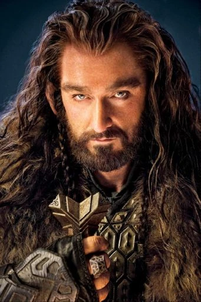
Thorin Oakenshield
The leader of the company of dwarves in The Hobbit, seeking to reclaim his homeland.
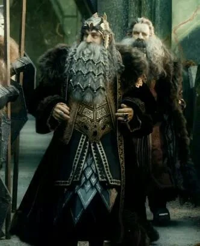
Thrain
Father of Thorin Oakenshield and former King under the Mountain.
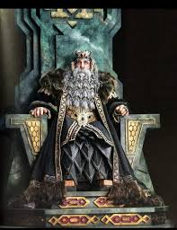
Thror
Grandfather of Thorin Oakenshield and former King under the Mountain.
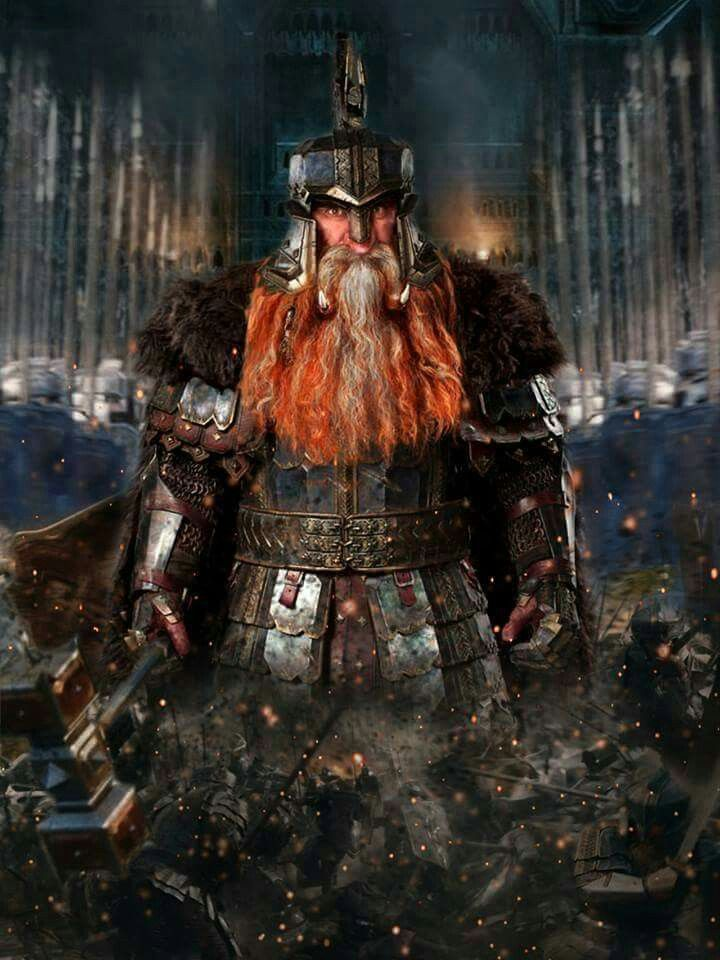
Dain
A brave dwarf who becomes King under the Mountain after Thorin's death.
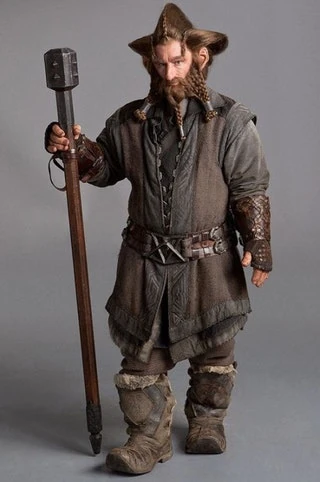
Nori
A dwarf known for his distinctive hairstyle and adventurous spirit in The Hobbit.
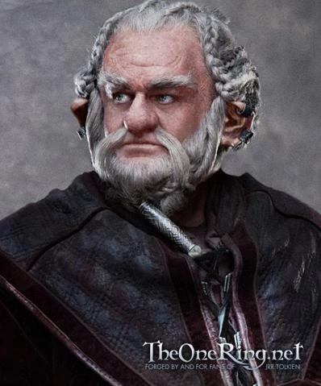
Dori
A strong and dependable dwarf from The Hobbit.

Balin
An elder dwarf known for his wisdom and kindness in The Hobbit.
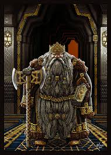
Durin
The eldest of the Seven Fathers of the Dwarves and founder of the line of Durin's Folk.
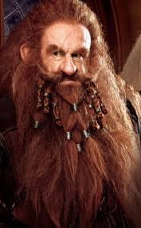
Gimli
A member of the Fellowship of the Ring, known for his bravery and loyalty.
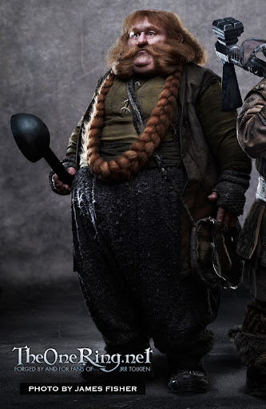
Bombur
A jovial and somewhat clumsy dwarf from The Hobbit.
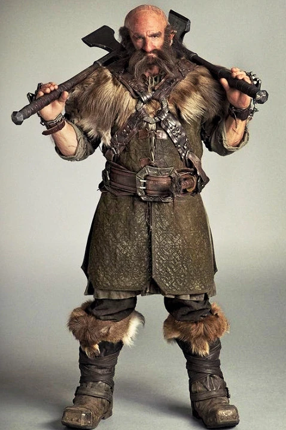
Dwalin
A fierce warrior and loyal companion in The Hobbit.
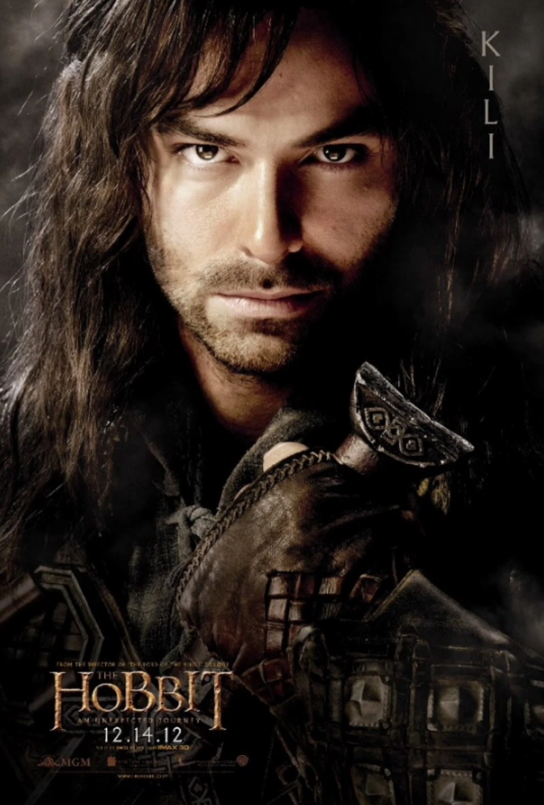
Kili
A young and brave dwarf, skilled with a bow in The Hobbit.
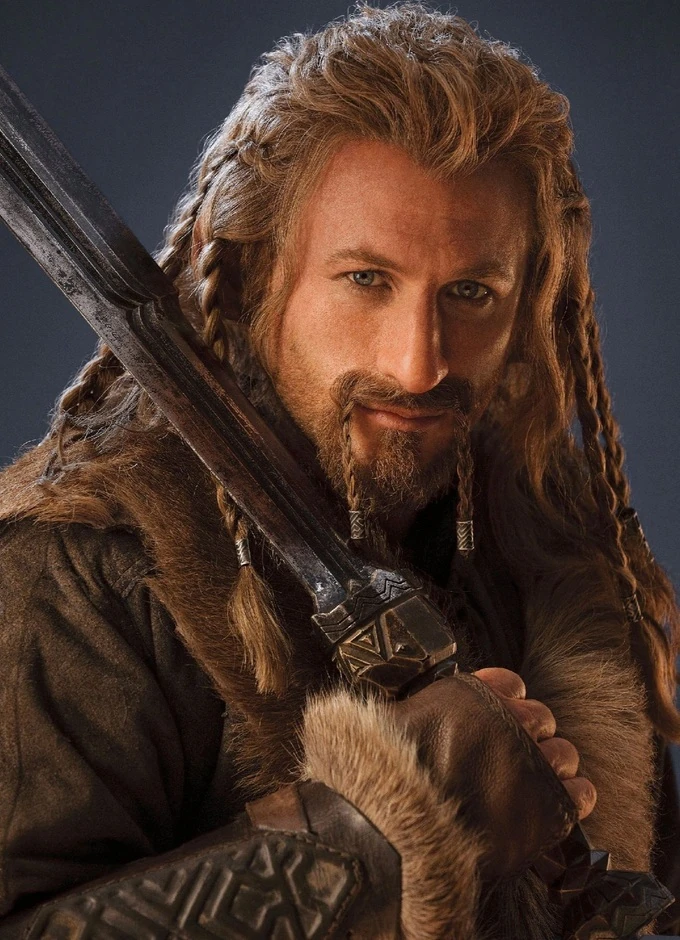
Fili
A courageous dwarf and Kili's older brother in The Hobbit.
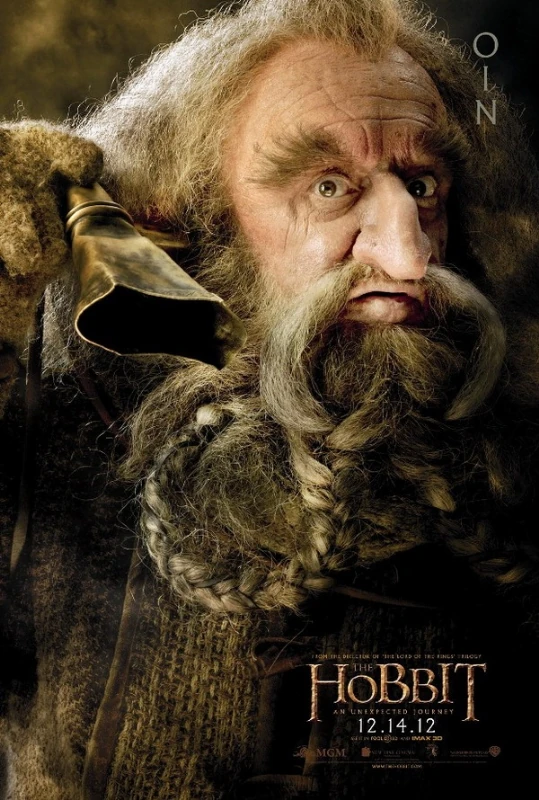
Oin
A dwarf known for his skills in healing in The Hobbit.
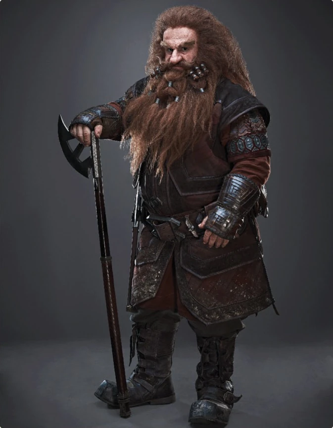
Gloin
A stout dwarf and father of Gimli in The Hobbit.
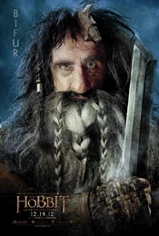
Bifur
A dwarf known for his unique speech in The Hobbit.

Legolas
A skilled archer and member of the Fellowship of the Ring.
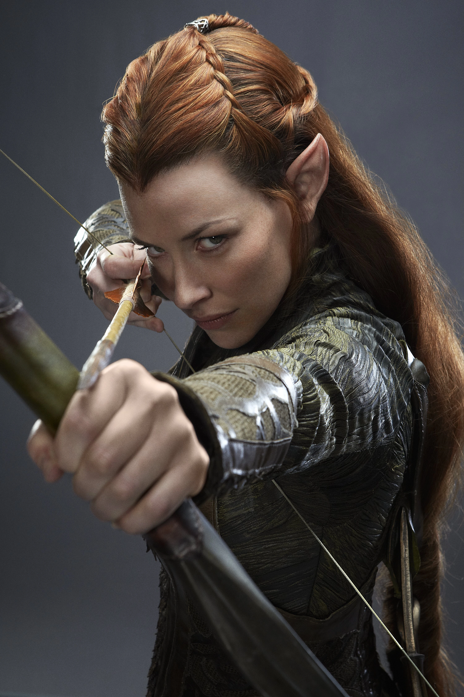
Tauriel
A captain of the Mirkwood Elven guard, known for her bravery and combat skills.
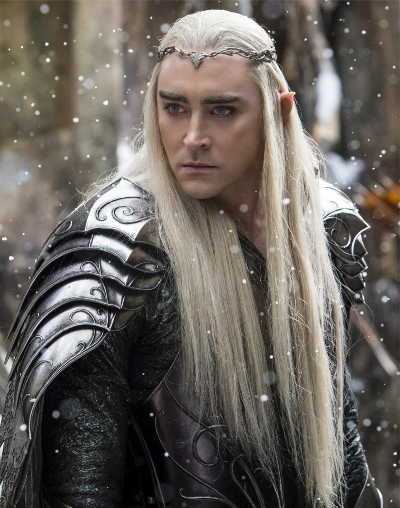
Thranduil
The Elvenking of Mirkwood and father of Legolas.
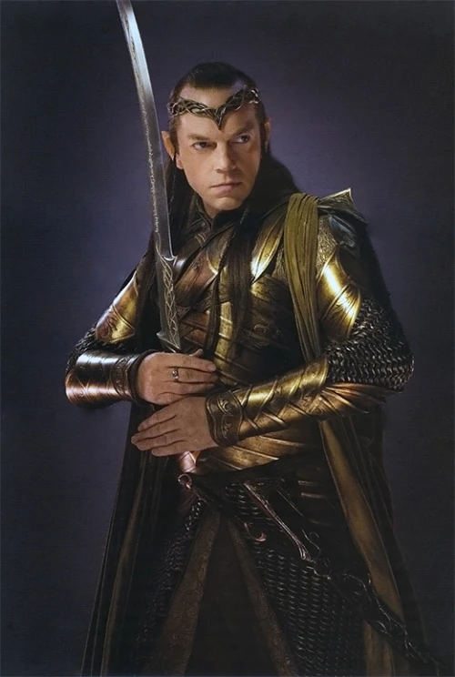
Elrond
The Lord of Rivendell, known for his wisdom and healing abilities.

Galadriel
The Lady of Lothlórien, renowned for her beauty and power.
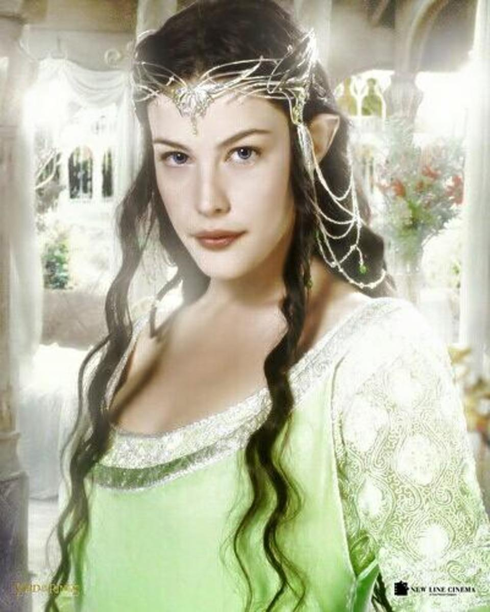
Arwen
The daughter of Elrond, known for her love story with Aragorn.

Celeborn
The Lord of Lothlórien and husband of Galadriel.
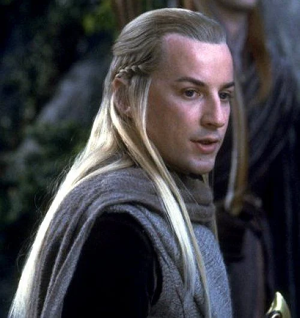
Haldir
An elf of Lothlórien who aids the Fellowship during their journey.
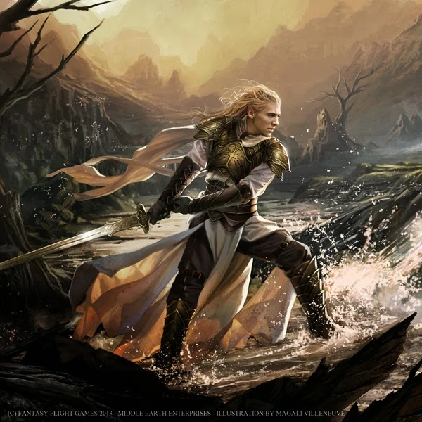
Glorfindel
A noble elf-lord known for his bravery and strength.
The Lord of the Rings explores the battle between good and evil by following the journey of ordinary individuals who rise to extraordinary courage. At its core, the story shows that true heroism does not come from strength or status but from perseverance,
friendship, and moral integrity. The One Ring symbolizes the corrupting nature of power, tempting even the noblest characters and revealing how difficult it is to resist domination and desire. Through the Fellowship’s struggles, Tolkien
emphasizes the importance of unity, hope, and sacrifice in overcoming darkness. Ultimately, the book teaches that even the smallest person can change the world and that victory often requires both bravery and humility.